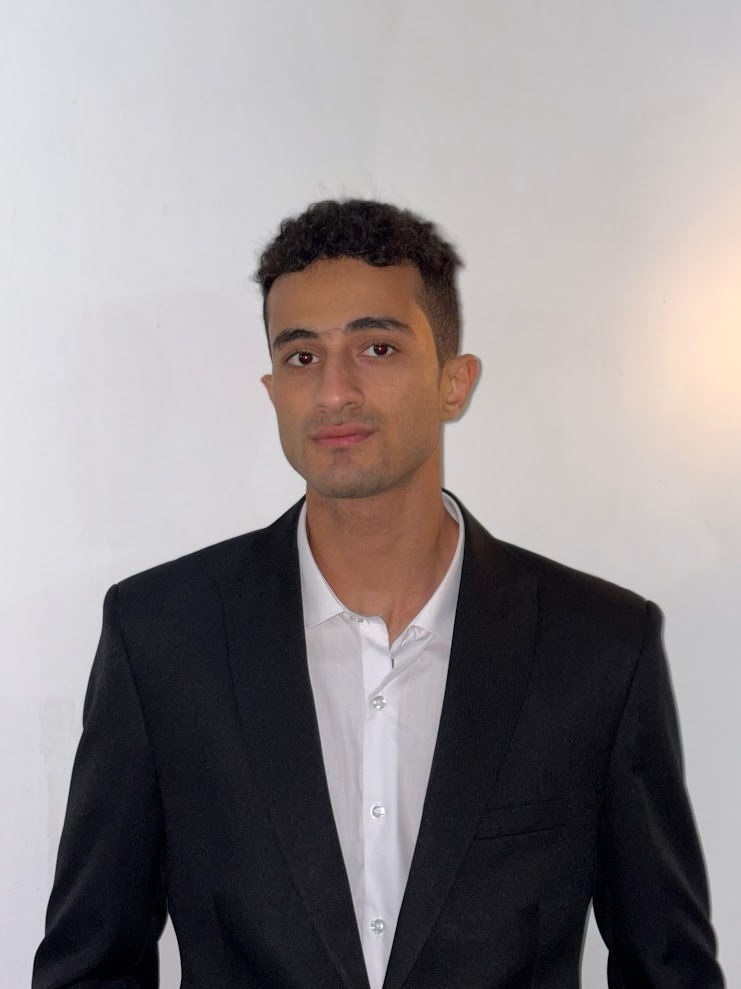

Available for AI Roles & Freelance
Hi, I'm Mohamed Walid
|
Computer Science Senior (Artificial Intelligence Major) passionate about building real-world AI systems, high-accuracy Computer Vision pipelines, YOLOv8 object detection, and deep neural networks.

AI & CV Specialist
PyTorch & YOLOv8
3.4
GPA
Top 5
DeepX '26
3+
AI Systems